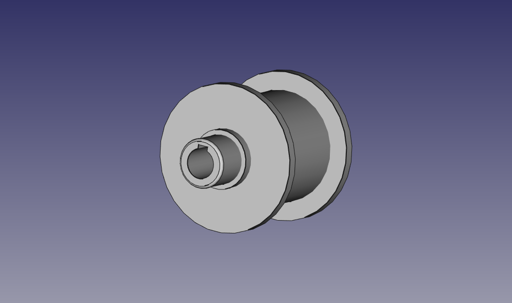

CINTA TRANSPORTADORA
Este diseño es una mejora sobre cinta transportadora
Patas y soporte de rodamiento: Se ha integrado en un solo objeto la pata y el soporte para el rodillo, en este objeto el rodamiento se introduce por el interior para quedar mas firmemente fijado, y se coloca sobre el perfil de aluminio con guías en una sola posición, por lo que se pierde la función de tensor, pero se facilita el centrado del rodillo, la pata tiene una altura fija, para que la altura del eje del motor quede a 63 mm, y tiene 2 orificios para fijar a un tablero ( uno de difícil acceso), son 2 patas con soporte y otras dos enfrentadas con simetría de espejo.
En los dos rodillos se puede conectar el motor, por lo que el motor se puede colocar en cuatro posiciones.

Materiales
Perfil aluminio 40mm (longitud a gusto del usuario) (22€/m)
4 Tuercas M8 redonda con pestaña ranura de 10 mm (1,20 €)
4 tornillos allen cabeza cilíndrica M8x20 cincado (0,22 €)
4 Rodamientos 6004 ISB 20x42x12mm (1,57 €)
precios de adajusa
Se puede conectar un motor trifásico siemens 1la7063-4ab10 (100€) con Variador de frecuencia Siemens SINAMICS V20 (170€) para realizar practicas con el variador.
Si quiero conectar el motor directamente hay que utilizar un reductor de velocidad
También puede funcionar con cualquier motor, adaptando la unión del eje con el rodillo, se recomienda que la velocidad del motor no supera las 300 rpm.